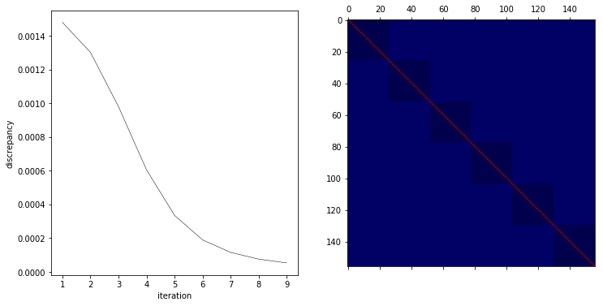
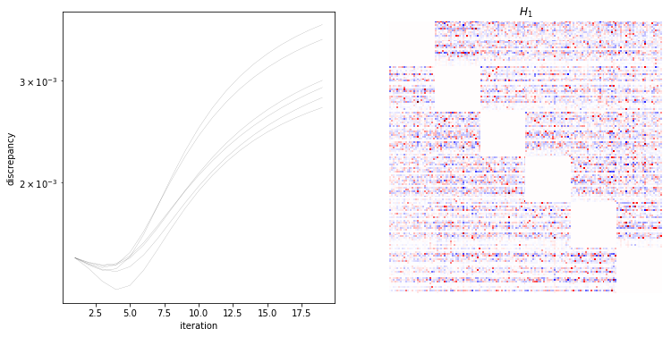
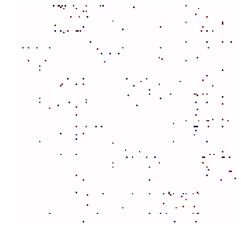

Six-letter words¶
In [1]:
%matplotlib inline
import matplotlib.pyplot as plt
import numpy as np
import time
import os
import fem
data_dir = '../../data/words'
print 'number of threads: %i' % (fem.fortran_module.fortran_module.num_threads(),)
number of threads: 32
In [2]:
words = np.loadtxt(os.path.join(data_dir, '06.txt'), dtype='U6')
unique_words = np.unique(words)
print 'number of words: %i, number of unique words: %i' % (len(words), len(unique_words))
number of words: 633565, number of unique words: 20083
In [3]:
print 'random word:', np.random.choice(words)
random word: little
In [4]:
words = np.array([np.array(list(word)) for word in words]).T
n, l = words.shape
print 'word length (n): %i, number of words (l): %i' % (n, l)
word length (n): 6, number of words (l): 633565
In [18]:
iters = 10
x, y = words.copy(), words.copy()
par, disc = fem.fit.fit(x, y, degs=[1], iters=iters)
In [24]:
fig, ax = plt.subplots(1, 2, figsize=(12,6))
for d in disc:
ax[0].plot(range(1, iters), d, 'k-', lw=0.1)
ax[0].set_xlabel('iteration')
ax[0].set_ylabel('discrepancy')
ax[1].matshow(par[1], aspect='equal', cmap=plt.cm.seismic)
Out[24]:
<matplotlib.image.AxesImage at 0x7f02b506b190>

In [98]:
ltn = dict(zip(list('abcdefghijklmnopqrstuvwxyz'),range(26)))
ntl = dict(zip(range(26),list('abcdefghijklmnopqrstuvwxyz')))
x = np.zeros(6*26)
j = np.random.randint(words.shape[1])
k = np.random.randint(6)
print k
print ''.join(words[:,j])
x[[26*i+ltn[l] for i,l in enumerate(words[:,j])]] = 1
x[k*26:(k+1)*26] = 0
print ''.join([ntl[n] for n in np.argmax(np.split(par[1].dot(x), 6), axis=1)])
4
friday
fridqy
In [7]:
import fem
iters = 20
m = np.array([len(np.unique(l)) for l in words])
m_sum = m.sum()
m_cumsum = np.insert(m.cumsum(), 0, 0)
data_files = [os.path.join(data_dir, f) for f in ['h1.npy', 'disc.npy']]
if np.all([os.path.exists(f) for f in data_files]):
h1, disc = [np.load(f) for f in data_files]
else:
start = time.time()
par, disc = [], []
for i in range(n):
not_i = list(set(range(n)) - {i})
x, y = words[not_i], words[i]
res = fem.fit.fit(x, y, degs=[1], iters=iters)
par.append(res[0])
disc.append(np.squeeze(res[1]))
end = time.time()
print '%02f minutes' % ((end-start)/60.,) # 5.56569569906 minutes
h1 = np.zeros(shape=(m_sum, m_sum))
for i in range(n):
m1, m2 = m_cumsum[i], m_cumsum[i+1]
h1[m1:m2, :m1] = par[i][1][:,:m1]
h1[m1:m2, m2:] = par[i][1][:,m1:]
np.save(data_files[0], h1)
disc = np.array(disc)
np.save(data_files[1], disc)
In [8]:
fig, ax = plt.subplots(1, 2, figsize=(12,6))
for d in disc:
ax[0].semilogy(range(1, 20), d, 'k-', lw=0.1)
ax[0].set_xlabel('iteration')
ax[0].set_ylabel('discrepancy')
for i in range(n):
i1, i2 = m_cumsum[i], m_cumsum[i+1]
h1[:, i1:i2] -= h1[:, i1:i2].mean(1)[:,np.newaxis]
scale = np.abs(h1).max()
ax[1].imshow(h1, aspect='equal', cmap=plt.cm.seismic, vmin=-scale, vmax=scale)
ax[1].axis('off')
ax[1].set_title('$H_1$')
plt.show()

In [9]:
h1_filter = h1.flatten()
order = h1_filter.argsort()
bottom, top = order[:100], order[-100:]
zeros = list(set(range(len(h1_filter))) - set(top) - set(bottom))
h1_filter[zeros] = 0
h1_filter = h1_filter.reshape((6*26, 6*26))
fig = plt.figure(figsize=(8,8))
ax = plt.gca()
ax.imshow(h1_filter, aspect='equal', cmap=plt.cm.seismic, vmin=-1, vmax=1)
ax.axis('off')
plt.show()

In [10]:
np.where(h1_filter > 0), np.where(h1_filter < 0)
Out[10]:
((array([ 0, 0, 2, 4, 4, 6, 8, 8, 8, 11, 12, 13, 14,
15, 15, 18, 18, 18, 18, 19, 26, 30, 31, 37, 37, 38,
39, 39, 46, 50, 53, 54, 54, 56, 56, 56, 57, 57, 60,
63, 63, 63, 64, 66, 67, 70, 71, 72, 73, 74, 78, 78,
81, 82, 82, 82, 84, 86, 86, 91, 92, 97, 97, 98, 103,
104, 104, 106, 106, 106, 108, 108, 112, 112, 112, 115, 117, 118,
118, 121, 123, 124, 124, 124, 133, 134, 134, 134, 135, 135, 136,
138, 141, 142, 143, 143, 144, 144, 148, 154]),
array([ 29, 32, 33, 47, 49, 127, 38, 44, 135, 68, 120, 146, 27,
102, 132, 36, 42, 45, 131, 33, 146, 75, 57, 101, 128, 103,
8, 20, 16, 135, 132, 88, 116, 32, 47, 101, 31, 83, 94,
126, 127, 135, 79, 16, 49, 146, 85, 42, 23, 128, 42, 127,
146, 129, 135, 150, 111, 42, 136, 47, 126, 16, 111, 68, 77,
87, 146, 31, 137, 140, 133, 147, 68, 101, 132, 135, 136, 151,
152, 42, 155, 47, 94, 145, 108, 94, 125, 129, 50, 109, 117,
120, 104, 50, 118, 126, 75, 113, 128, 127])),
(array([ 0, 0, 0, 0, 0, 0, 0, 0, 1, 1, 2, 2, 8,
12, 15, 17, 18, 18, 18, 18, 18, 26, 26, 26, 26, 30,
30, 30, 30, 30, 30, 34, 34, 34, 39, 40, 43, 46, 52,
52, 52, 52, 56, 57, 63, 63, 63, 64, 65, 66, 69, 69,
69, 69, 69, 71, 81, 82, 82, 86, 86, 86, 86, 86, 86,
86, 89, 91, 92, 95, 97, 106, 108, 108, 108, 108, 108, 108,
108, 115, 115, 121, 133, 133, 134, 134, 134, 134, 134, 134, 134,
148, 148, 148, 148, 148, 148, 148, 154, 154]),
array([ 26, 30, 34, 40, 49, 59, 61, 120, 31, 83, 42, 129, 50,
146, 47, 75, 27, 31, 43, 135, 139, 52, 120, 135, 152, 4,
8, 14, 23, 102, 136, 60, 66, 72, 120, 62, 16, 146, 36,
47, 78, 92, 42, 139, 94, 109, 132, 128, 146, 102, 16, 37,
49, 127, 135, 29, 139, 120, 136, 49, 56, 60, 126, 127, 128,
146, 127, 31, 42, 42, 135, 42, 78, 82, 92, 98, 132, 146,
151, 68, 94, 135, 42, 128, 61, 82, 104, 108, 111, 118, 120,
23, 57, 94, 102, 106, 125, 129, 47, 112])))